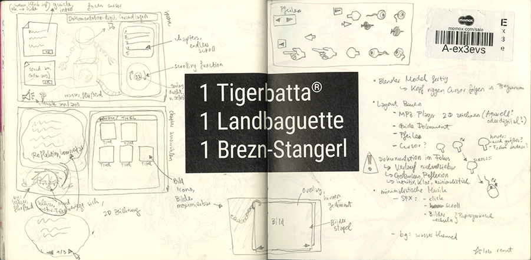
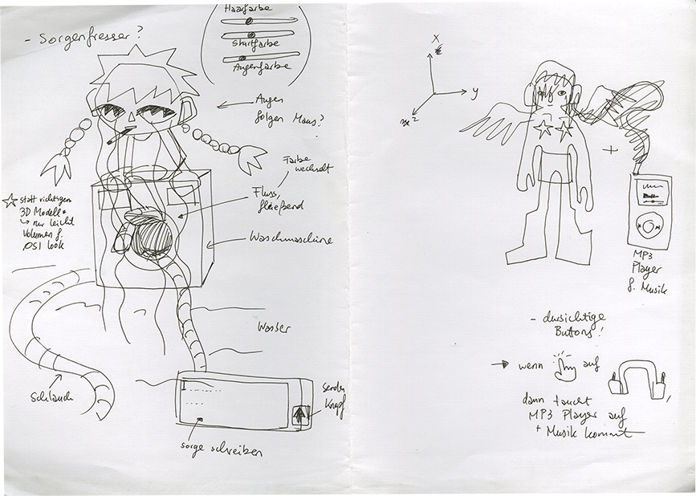
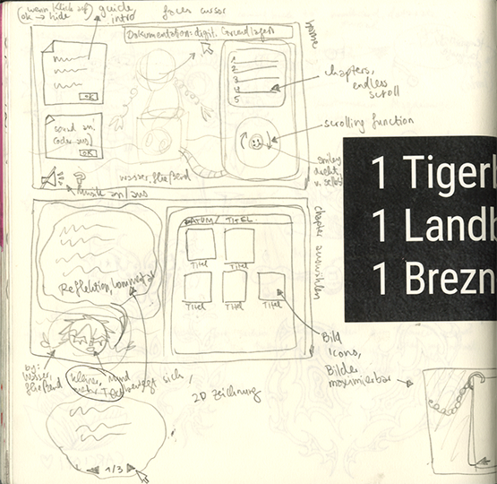
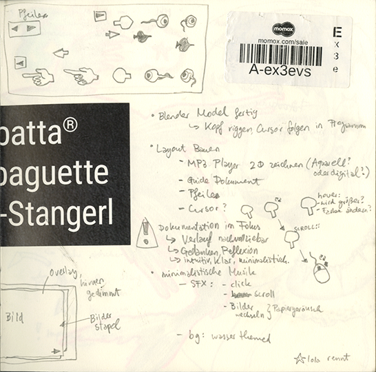

Alle visuellen Elemente wurden von mir kreiert. 3D Modelle in Blender, deren Animation, digital gemalte Assets, Musik in einer FL Studio Testversion. (SFX von der Wii, aus einem Youtube Video gezogen und die MP3s in Reaper zugeschnitten und sortiert weil meine FL Studio Testversion abgelaufen ist, ouch.) Auch die Bild-Texturen der 3D Objekte in der Animation habe ich fotografiert und in Blender eingebaut. Ohne den Grundlagenkurs für digitale Kommunikation mit Katharina Neijdl hätte ich mich nicht an html, css und javascript rangetraut. Vielen Dank für die Geduld und Hilfe mit uns allen, es war eine große Freude.
Das Bauen der Website und dessen Funktionen mit JavaScript war dank dem in Visual Code Studio eingebauten KI-Assistenten (teils auch andere) möglich. Auch wenn ich generativer KI (Visuelle Künste, Musik, etc.) sehr kritisch gegenüber stehe und generell Sachen wie ChatGPT vermeide, hätte ich diese Website in ihrer Funktion nicht aufbauen können. Auch zum Debuggen war sie wichtig. Das Konzept der Website wurde eigentlich auch recyclet aus dem ursprünglichen Konzept für mein Digital Drawing Tool, wo ich dann doch was anderes machen wollte. Ohne dieses Doku-Projekt hätte ich nicht so viel verschiedenes ausprobiert, gelernt und vertieft und überhaupt zu Ende
gemacht. Ich habe mich aber auch komplett übernommen. Das war wirklich eine Lektion, dass beim Programmieren alles doch immer länger dauert, als man denkt. Jede Kleinigkeit klappt dann irgendwie doch nicht und dann muss stundenlang debugged werden oder am Ende verworfen und neu gemacht werden. Ich lerne, dass bei solchen Projekten im Vorraus ein Rahmen gesetzt werden muss. Nicht alle visuellen Elemente anfertigen und dann merken, dass das Zusammenbauen ja nochmal 10 Mal solange dauert. Leider hatte ich alles schon zur Hälfte fertig und wollte nicht alles verwerfen und musste mich dann enorm durchboxen. Meine Augen tun so weh.





